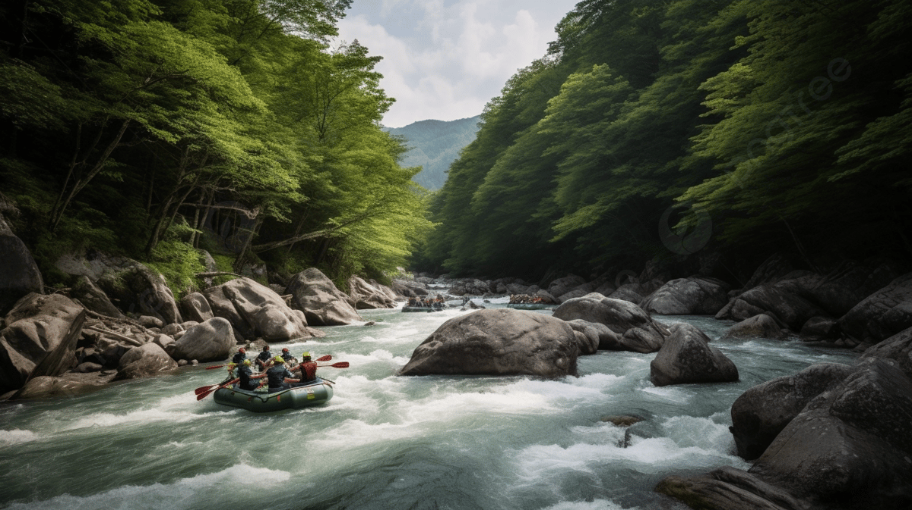
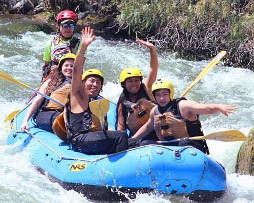

White Water Rafting

At White Water Rafting, headquartered in the beautiful state of Idaho, we are passionate about providing unforgettable rafting adventures that connect you with nature and create lifelong memories. Our dedicated team of experienced guides is committed to ensuring every trip is both thrilling and safe, catering to all skill levels and ages. With a deep love for the outdoors and a focus on exceptional service, we strive to make every guest feel welcomed and valued. Whether you’re seeking an adrenaline-pumping journey or a family-friendly escape, we invite you to explore the stunning waterways and breathtaking landscapes with us.
History
White Water Rafting, established in 1980 by John and Sarah Thompson, has been at the forefront of adventure tourism for over 40 years.
Starting with just a few rafts in the Rocky Mountains, the company quickly gained a reputation for providing safe and thrilling rafting
experiences. Throughout the 1990s, White Water Rafting expanded its operations across North America, navigating rivers from the Grand Canyon
to the Smoky Mountains. Their innovative approach introduced specialized trips, catering to a wide range of adventurers from families to extreme
thrill-seekers.

By the early 2000s, White Water Rafting had become a leading name in the industry, recognized for its commitment to safety and customer
satisfaction. Today, the company offers a diverse array of rafting experiences, supported by a fleet of modern rafts and expert guides.
Dedicated to preserving the natural beauty of the rivers they explore, White Water Rafting continues to deliver unforgettable adventures,
ensuring every guest leaves with lasting memories.